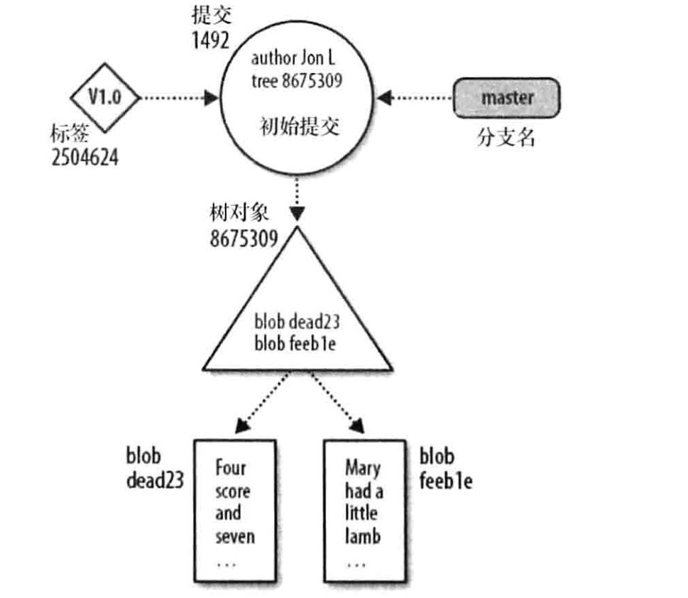
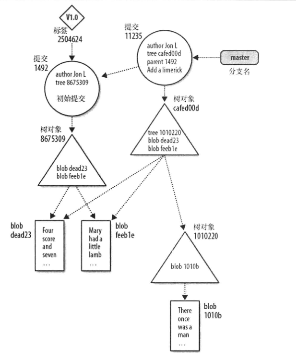
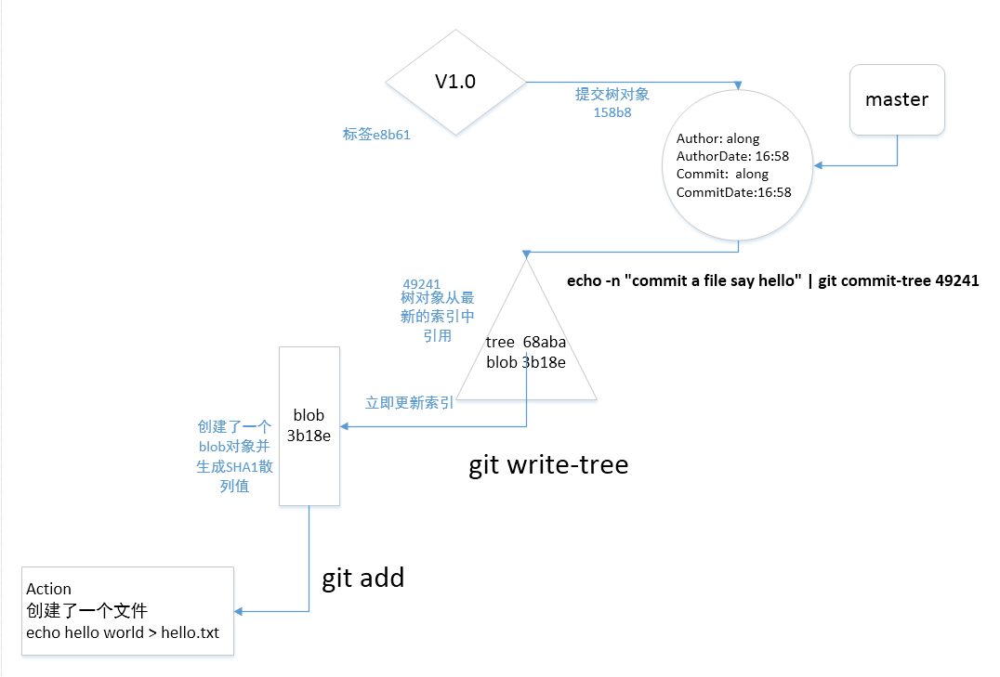

Git对象
问题
- git 在每次提交保存的是什么
- .git目录是用来干什么的
- git提交生成的像乱码一样的一串字符是什么
Git对象类型
块(blob--binary large object)
用来指代可以包含任意数据的变量或文件,其内部结构会被程序忽略. 一个blob被视为一个黑盒,一个blob保存一个文件的数据, 但不包含任何关于这个文件的元数据, 甚至没有文件名
目录树(tree)
一个目录树代表一层目录信息.记录了blob标识符,路径名和一个目录里所有文件的一些元数据.它可以递归引用其他目录树或子树对象来建立一个包含文件和子目录的完成层次结构
提交(commit)
一个提交对象保存版本库中每一次变化的元数据,包括作者,提交者,提交日期和日志信息. 每个提交对象指向一个目录数对象
标签(tag)
一个标签对象分配一个任意的且人类可读的名字给一个特定对象,通常是一个提交对象. 常用的标签例如 Version-1.0-Ha
Git对象图解

Git二次提交对象

Git工作时对象的变化
blob
git init find . ## 查看初始化git创建的内容find ./objects/ echo 'hello world' > hello.txt git add hello.txt find ./objects/ ## 发现多了一个文件夹, 文件夹中的文件为一串字符
当创造了一个文件的时候,Git并不关心文件名,git只关心文件里的内容:'hello world'的字节和换行符. git对这个blob执行一些操作, 计算出它的SHA1散列值,并把散列值的十六进制表示作为文件名放入git对象库中
SHA1散列值保证了内容的唯一性,两个相等的SHA1散列值的概率为2^160(10^48)分之一,就算用一万亿人每秒产生一个blob对象的速度,也要一万亿年,才能产生10^43个blob对象
## 你可以随时通过散列值从git对象库中取出其内容
git cat-file -p 3b18e512dba79e4c8300dd08aeb37f8e728b8dad(3b18 至少前4个字母)
tree
Git通过目录树(tree)的对象来跟踪文件的路径名.当使用git add 命令时, git 会立即为文件内容创建一个blob对象,但是不会为tree创建一个对象. git 会更新索引,索引用来跟踪文件的路径名和相应的blob,每次执行命令时,git会用新的路径名和blob信息来更新索引
## 查看索引
git ls-files -s
## 捕获索引状态并更新tree对象
git write-tree ## 68aba62e560c0ebc3396e8ae9335232cd93a3f60
find .git/objects/
- tree层次结构
## 新建一个文件夹将hello.txt 放到新文件夹中
mkdir subdir
cp hello.txt subdir/hello.txt
git add subdir/hello.txt
git write-tree ## 68aba62e560c0ebc3396e8ae9335232cd93a3f60
可以看到subdir的对象名仍然是上面生成的树对象, 如果你拥有的一个树对象与别人的树对象一模一样 你就可以判断, 你们两个的树对象是一模一样的
find .git/ojbects
## 这里有三个唯一对象, 一个包含 'hello world'的blob,
## 一个包含hello.txt的树,文件里是'hello world'
## 还有一颗树 包含了指向hello.txt的树对象和一个包含 'hello world'的blob
## 提交树对象
echo -n "commit a file say hello" | git commit-tree 492413
#158b8896e8ee7be2024cd13f698d4cf3d5520e29
git cat-file -p 158b8 ## 查看提交内容
git show --pretty=fuller 158b8 ## 查看详细提交内容
- tag
## 为158b8 提交打标签V1.0
git tag -m 'Tag version 1.0' V1.0 158b8
git rev-parse V1.0
git cat-file -p e8b61a794bcf0188bc62d7bb89b5e20cb5b32343
